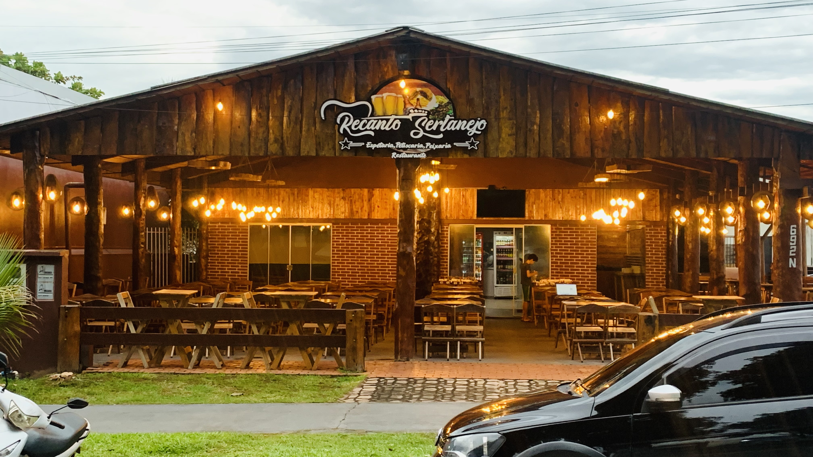
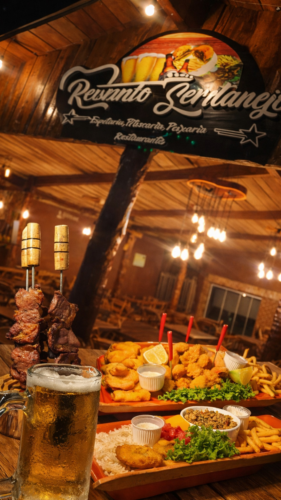
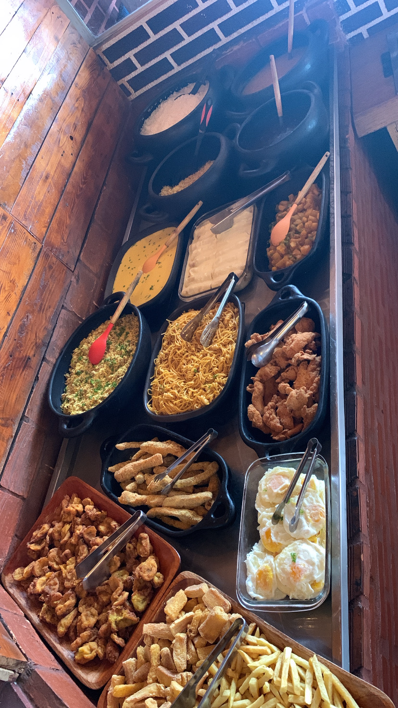
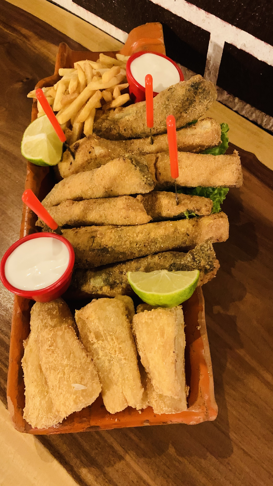
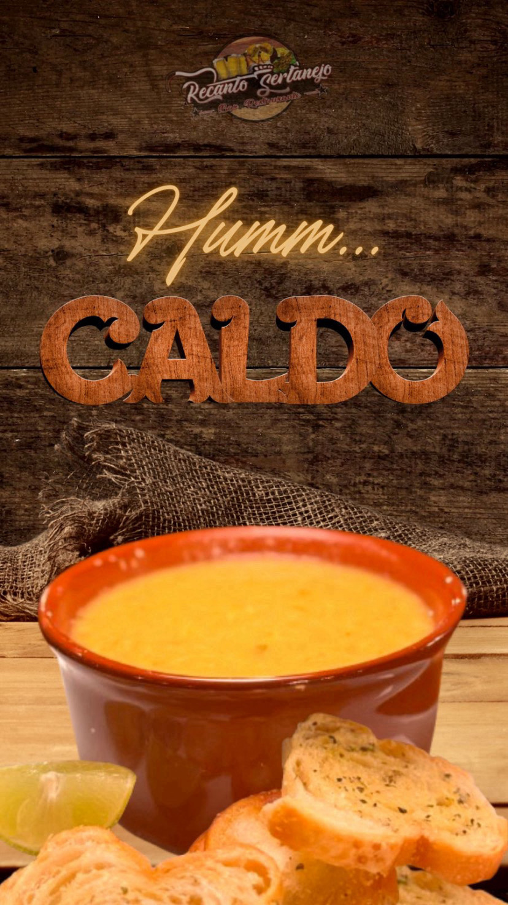
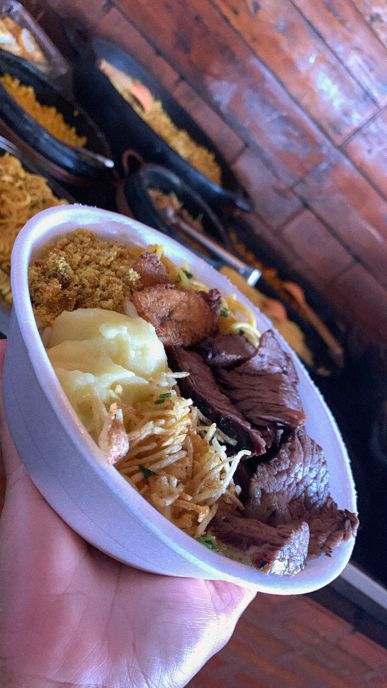
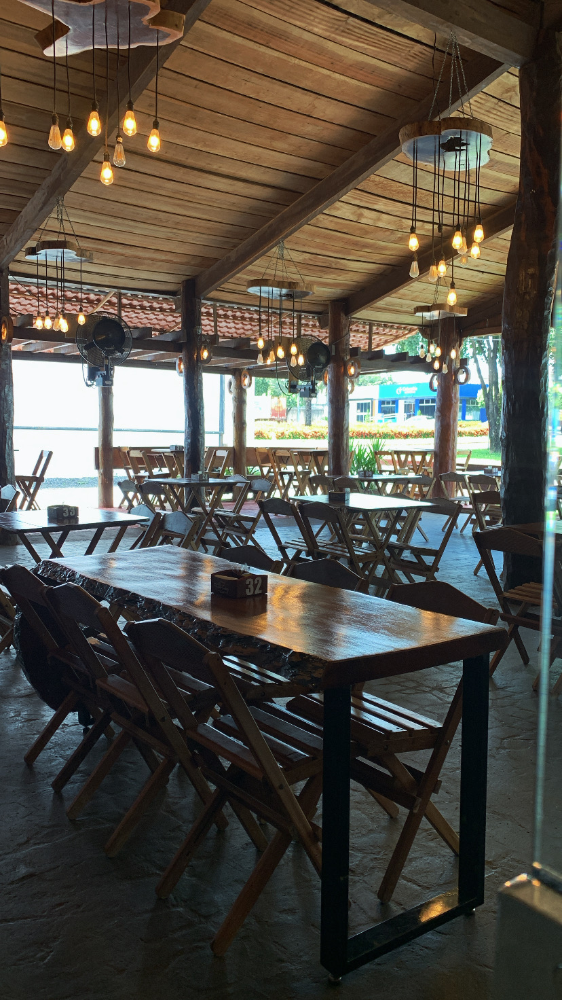
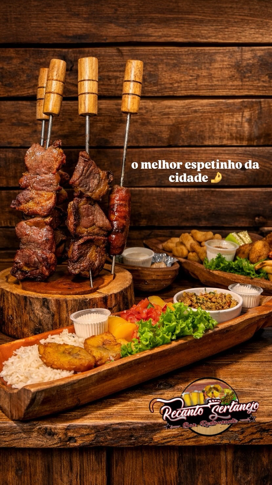

Nova Mutum Centro • MT
O sabor da brasa, do fogão à lenha e do ambiente que faz todo mundo querer ficar mais um pouco.
Almoço, jantar, espetaria, peixaria, porções, caldos, pratos à la carte e música ao vivo no fim de semana em um espaço rústico, familiar e acolhedor.
Churrasco na brasa e pratos marcantes
Ambiente familiar, rústico e agradável
Música ao vivo aos fins de semana

Clima real da casa
Desde 2022
Uma casa nova com essência sertaneja e mais de 4 anos de vivência no ramo da alimentação.
10h às 00h
Atendimento para almoço, happy hour, jantar e encontros que vão até mais tarde.
Centro de Nova Mutum
Fácil de encontrar para moradores, famílias e quem passa pela cidade ou pela rodovia.
Especialidades da casa
Uma experiência completa para almoço, jantar e fim de semana.
O Recanto Sertanejo combina brasa, comida afetiva e petiscos que chamam a mesa inteira. Tudo isso com atendimento próximo, chopp gelado e um clima que valoriza o encontro.
Espetaria na brasa
Espetos e cortes preparados com sabor de churrasco de verdade, perfeitos para compartilhar.
Peixaria e peixes crocantes
Opções que destacam a peixaria da casa, com textura, sabor e apresentação de chamar atenção.
Almoço no fogão à lenha
Comida com cara de casa, ideal para quem procura almoço caprichado e acolhedor no centro.
Pratos à la carte
Pratos pensados para jantar com mais conforto, reunir a família ou transformar a noite em ocasião.
Petiscos, porções e caldos
Ótimas escolhas para happy hour, roda de conversa, música ao vivo e aquela mesa cheia de sabor.
Chopp gelado e clima de encontro
Um ambiente que combina com celebrações, finais de semana e quem gosta de comer bem sem pressa.

Fundado em 2022
Mais do que servir: criar propósito, oportunidades e história.
A história da marca
Um restaurante criado para ter essência própria e acolher de verdade.
O Recanto Sertanejo nasceu da vontade de oferecer mais do que um serviço: nasceu do desejo de criar um propósito, gerar oportunidades e construir uma história com identidade própria.
Em Nova Mutum, a casa se consolidou com uma proposta que mistura comida de qualidade, clima rústico, excelente atendimento e um ambiente familiar onde o cliente se sente à vontade para voltar sempre.
O que você encontra aqui
Espetaria, peixaria, petiscaria, porções, caldos, pratos à la carte e almoço no fogão à lenha.
O grande diferencial
Churrasco na brasa, estrutura charmosa, chopp gelado e uma experiência acolhedora para família e amigos.
Para quem a casa é ideal
Moradores do centro, famílias, grupos de amigos e clientes que chegam pela rodovia e querem comer muito bem.
Experiência Recanto
Visual, sabor e atmosfera andando juntos.
Em vez de prometer demais, a casa deixa o ambiente e a comida falarem por ela. O site usa isso a favor com fotos reais, vídeo e mensagens claras para conversão.
Ponto de parada perfeito
Uma opção estratégica para atrair quem mora em Nova Mutum e também quem vem da rodovia procurando refeição boa e ambiente confiável.
Fim de semana com energia
Música ao vivo ajuda a transformar jantar e petiscos em programa completo para casal, família e grupo de amigos.
Ambiente que fixa na memória
Madeira, iluminação quente e atendimento próximo criam uma percepção de marca muito mais forte do que apenas “mais um restaurante”.
Galeria real
Pratos, fachada, buffet e o clima que fazem a casa se destacar.





Quer garantir sua mesa ou adiantar seu pedido?
Fale agora com o Recanto Sertanejo pelo WhatsApp.
Atendimento rápido para reservas, dúvidas, pedidos e informações sobre a programação do fim de semana.
Contato e localização
Fácil de achar, bom de ficar.
O Recanto Sertanejo atende no centro de Nova Mutum com estrutura ideal para almoço, jantar, encontros em família e parada estratégica de quem chega pela cidade.
+55 65 99619-0342
jefersonalvesmoreira15@gmail.com
@recanto_sertanejonm
Avenida dos Beija Flores, 692 • Nova Mutum Centro • MT
Atendimento das 10:00 às 00:00
Peça uma reserva ou atendimento
Preencha e enviaremos sua mensagem pronta para o WhatsApp.